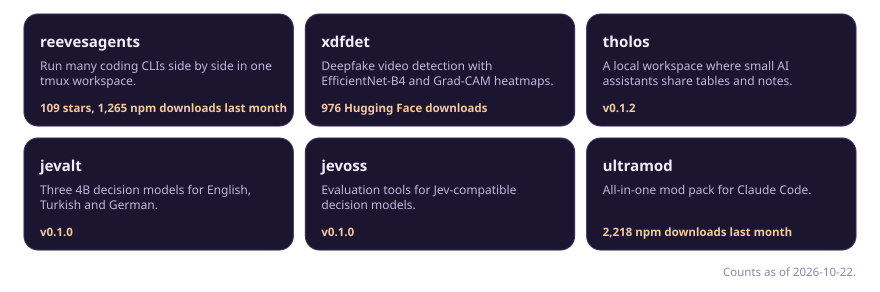
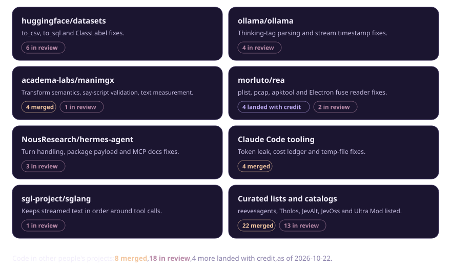

I build agent tooling, small open models and explainable deepfake detection, and I fix the libraries I rely on.
Projects

reevesagents | xdfdet | tholos | jevalt | jevoss | ultramod
Open source

Links
mertkayacs.com | eschatialabs.com | Hugging Face | X @mertkayaai | Full open-source list